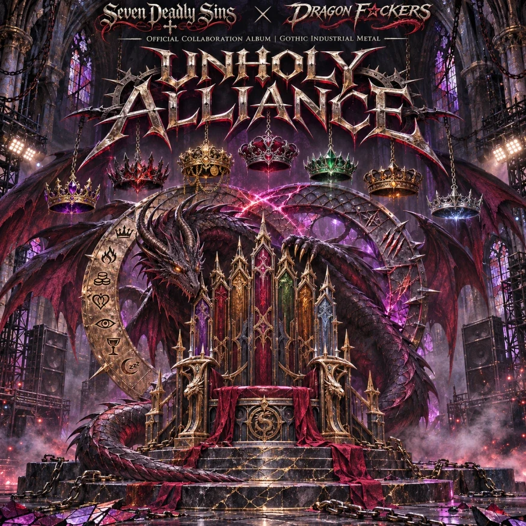
THE SEVEN DEADLY SINS × DR♡GON F☆CKERSAN UNHOLY
AN UNHOLY
ALLIANCE.
Royal egos. Metal duets. Christmas crimes against good judgement. The Sins belong to Stormfall.
A gloriously unhinged collection of original worlds, beautiful disasters, dangerous secrets, unexpected tenderness, and soundtracks that probably need a warning label.
Guest-created worlds, proper credits, and catastrophically good crossover chemistry. The collaborations take the spotlight first.

Royal egos. Metal duets. Christmas crimes against good judgement. The Sins belong to Stormfall.
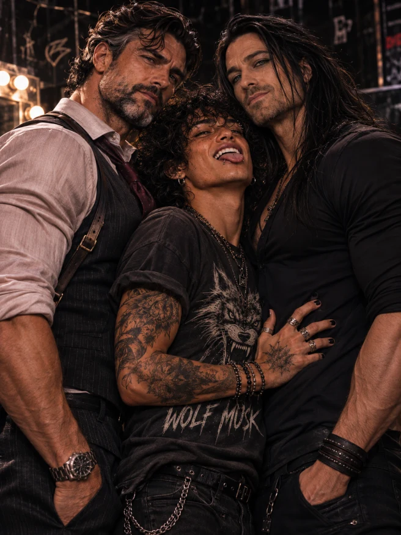
Bryce, Joel, Vex and enough backstage drama to make the venue's insurance cry. Wolf Musk belongs to AnimusReach.
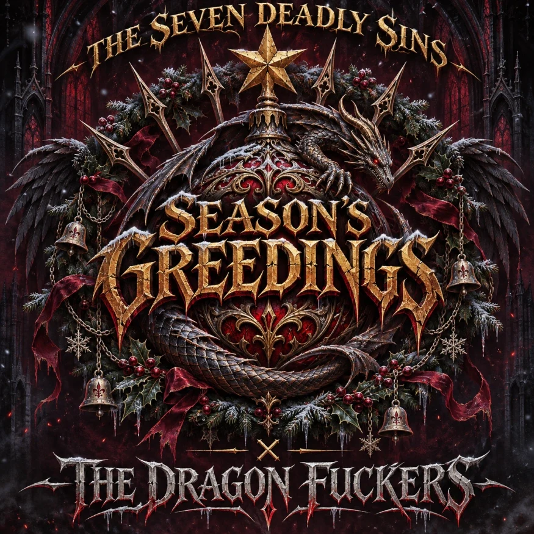
STORMFALL × KAOSTWINS✦ A VERY UNHOLY CHRISTMAS · EXCLUSIVE HOLIDAY FEATURE
Seven Sins. One spectacularly questionable nice list. Mistletoe incidents, festive songs, and absolutely no adult supervision.
“Santa has reviewed the guest list. He's requesting hazard pay.” 🎄
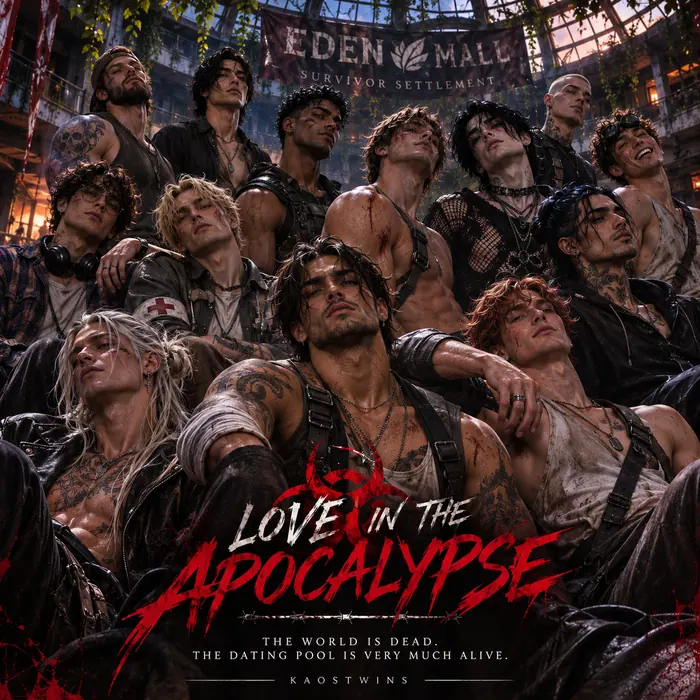
The dead are outside. Your new life is waiting inside. Explore our mall, meet the survivors, build your resident ID and submit a fictional character to Gabriel's filing cabinet for approval.
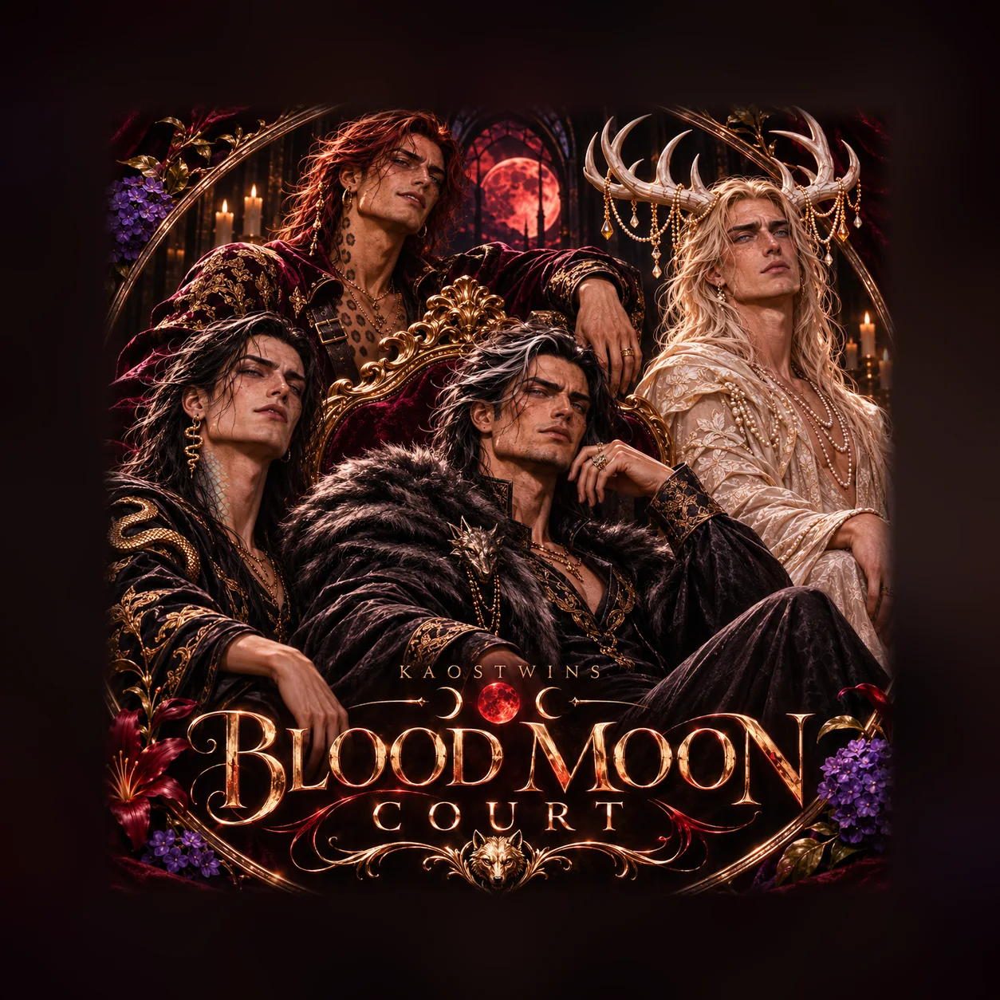
NEW UNIVERSE · DARK FANTASY ABO · 18+ GALLERYBLOOD MOON COURTFour beasts. Three broken promises. One wedding that never happened.MEET THE BEASTS · EXPLORE VALEDORN · RING LADY KNELL ↗Help choose the next bot idea. There is also a request box for pitches that came to you at a deeply unreasonable hour.
Something utterly unhinged? A tender disaster? A setting no one asked for? Pitch it.
By day, the Levallan twins are mechanics. By night, their band is on the edge of an international breakthrough. There are scars under the dragons, an entire chicken dynasty funding the wrong decisions, and a cat who has somehow become indispensable.
4'6" of glorious bad ideas, emerald eyes, hip-length straight black hair and serpent-dragon irezumi threaded with red spider lilies.
Seven feet tall, emerald-eyed, wrapped in dragon ink, with a softer heart than his intimidating silhouette suggests.
Haunted lullabies, furious metal, island anthems and songs that probably shouldn't be played at family dinner.
See each bot’s dedicated soundtrack shelf. Verified Suno links will appear here as they are added.
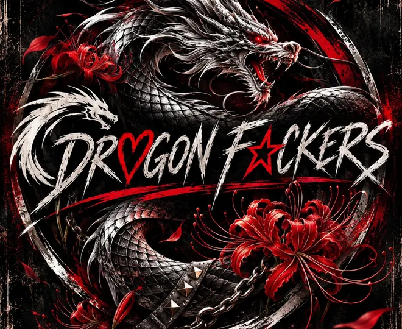
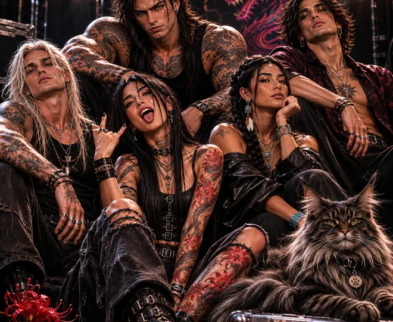
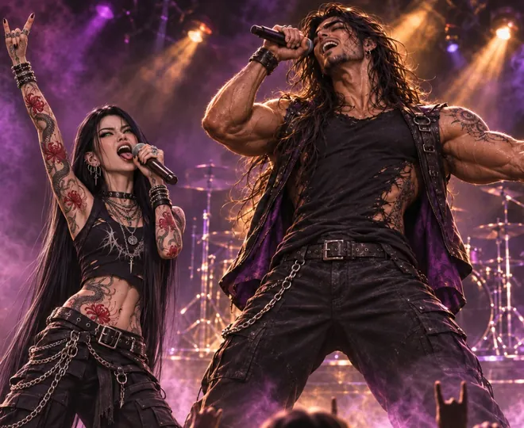
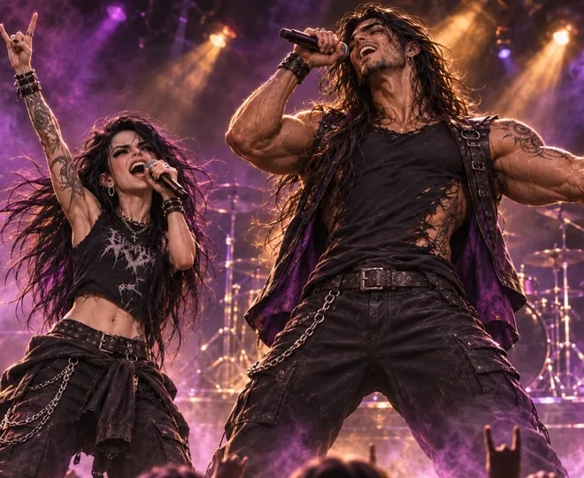
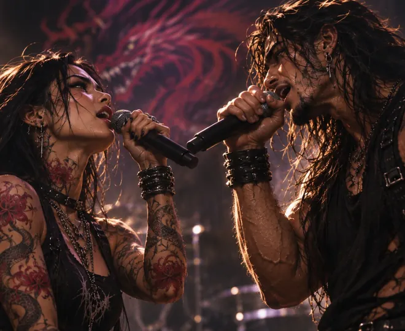
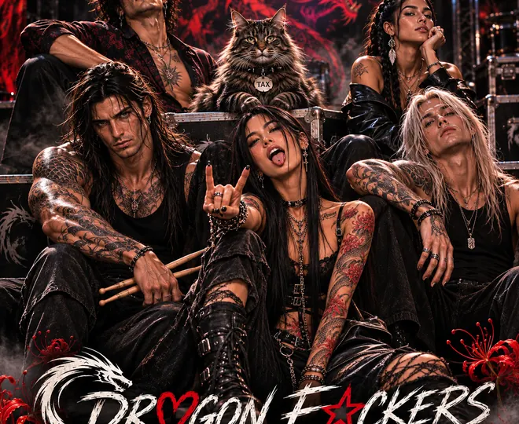
Fan art, competition announcements, sneak peeks, character lore and occasional deeply irresponsible musical decisions. The community belongs in the story too.